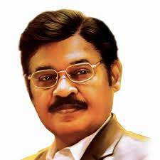

SRM Institute of Science and Technology (SRMIST), formerly SRM University, is a private deemed university, located in Kattankulathur, Chengalpattu (near Chennai), Tamil Nadu, India. Founded in 1985 as SRM Engineering College in Kattankulathur, it gained the deemed status in 2002. SRM Institute of Science and Technology includes four campuses in Tamil Nadu — Kattankulathur, Ramapuram and Vadapalani, and Tiruchirappalli, three distinct state private universities – in Andhra Pradesh, Haryana and Sikkim.

SRM Institute of Science and Technology/Founder
T. R. Paarivendhar
T. R. Paarivendhar (also known as T. R. Pachamuthu) is an Indian Politician and Indhiya Jananayaga Katchi MP to the 17th Lok Sabha from Perambalur Lok Sabha constituency, Tamil Nadu. He is well known as the founder chairman of the SRM Group of educational institutions.